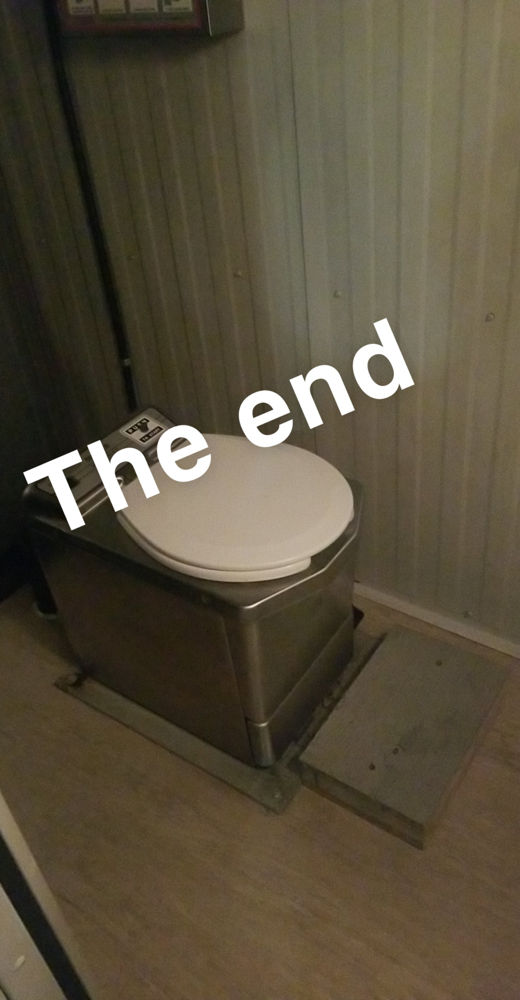
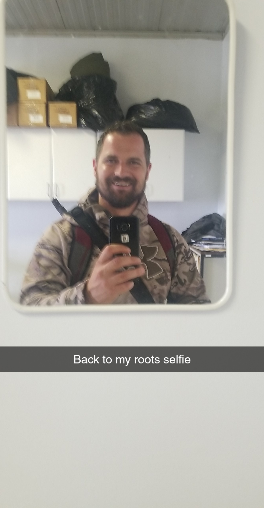
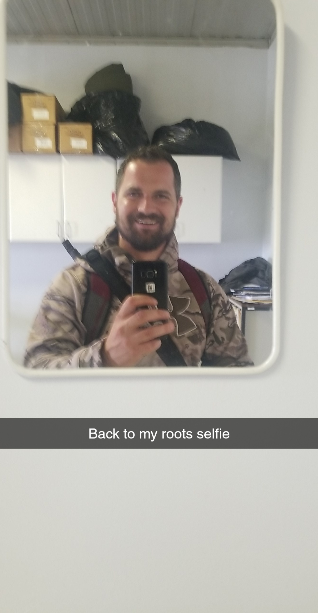
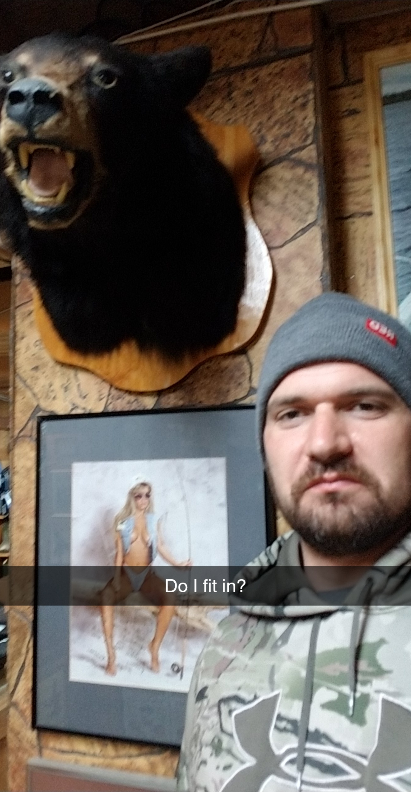
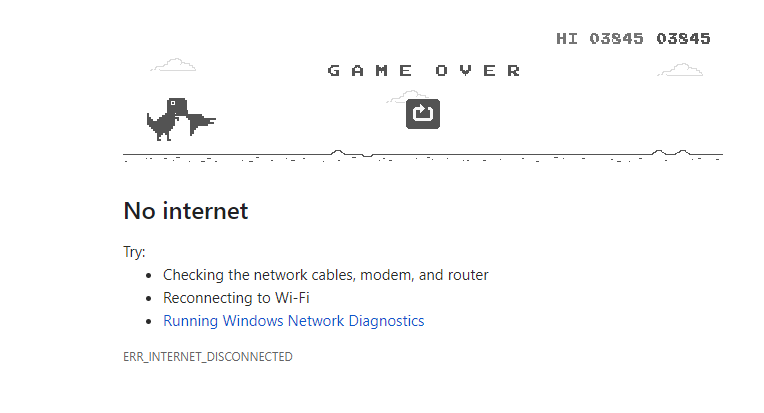

August 19 - One day since we were supposed to leave.
It's been one day since we were supposed to leave for civilization and more importantly... internet and cell reception. We came to the NORAD North Warning System location LAB 4 four days ago and we're supposed to be picked up by helicopter, however due to inclimate weather we are currently stranded for an undetermined amount of time.
Our group consists of five men; Bruce - the electrician, Vinnie (or Vince) - the company man, Hamilton - our bear watch (that's actually a real job) and chef extrodinare, Tyler aka Noobie who is also my brother, and myself - Nate - tower climber assistant and pretty cool guy.
We've all been acting quite strange as the hopes of us leaving LAB 4 disapeared in the fog hours ago. Frankly, we have no idea how long we'll be here and there isn't much to do.
Bruce has been asking me to clear the weather, as if I was a Shaman who had such abilities. Wait... can Shaman do that? I'd google it but... I digress. Welcome to the struggle.
At one point today I thought Hamilton was dead, however it turns out he just really likes his sleep. He's been slightly reclusive and hiding out in the generator room, a room that requires double hearing protection just to enter. Though he's been quite nice in lending me his shotgun so I could leave the immediate area to go for hikes.
Vinny has been chipper and optimistic all day. I think we'll eat him first.
Noobie hasn't wanted to go for a hike or go fishing all day. He groans about "the weather," and "I don't want to miss the helicopter." This is really frusterating for me as I'm bored AF and could use an accomplice in my A.D.D. fueled adventures. Instead he opts to play Pin Ball on his Ipad for hours straight.
As you can probably tell, I feel Cabin Fever in full effect. I've been pacing around the single room that houses Bruce, Noobie and Myself. Reading Lables of food containers that have long since expired. Randomly walking in circles around the Helipad until the weather soaks through my clothes and eventually I give in to the cold, wet, North Atlanic and come back inside. The bordem finally hit me hard enough to create this Log.
With any luck we should be out of here tomorrow, however that would make this a rather uneventful blog and you'd miss the drama of choosing whom to eat first... *spoiler alert* It will be Vinnie.
More updates to come.
1 / 5

Hamilton our trusty Bear Watch
2 / 5

Vinnie the man, the myth the legend.
3 / 5

Noobie looking majestic AF.
4 / 5

Bruce looking pleasently surprised to have his picture taken.
5 / 5

A couple of bears came to visit us (this was a few days earlier).
❮
❯
*** Bonus Log ***
How to use an Incinolet
It turns out there are a lot of hours in the day, and when your work is done and there's nothing else to do; and no internet, no phone service, no roads or stores, the day can actually be quite long. So here's a bonus blog on how we poop in the Arctic.
- Step 1: the obvious first step in using an Incinolet is to lose all decency. This isn't a porcilin thrown and it's not for the faint of heart.
- Step 2: Get hearing protection. The toilet is in the Generator Room, which is loud AF.
- Step 3: Get a Bowl Liner and line the toilet.
- Step 5: Poop.
- Step 6: Send your poop to a fiery grave
- Step 7: Remind yourself that you're making good money to live like this and that it's all going to be ok.

Nate.
August 20 - Two day's since we were supposed to leave.

OK... So things aren't going great. Vinnie got our hopes up last night by telling us we might fly out, but then the weather turned bad... again.
To make matters worse, the Incinolet I very ironically wrote about yesterday broke, so now we have to deficate outside. In the cold rainy arctic Tundra. We had a safety meeting about this. There was two important take-aways; Where to safely go number two. The Fog is so thick anyone could easily get lost even close to site and of course this is bear country. The other When going number two remember to face into the wind. It's important. You wouldn't want your own excretion to blow into your pants during free fall. This is my life now. And there are no signs of leaving anytime soon.
So to sum it up, we're stuck here another day, we're going to be shitting outside, and oh yeah, our food and water are rapidly running low.
It's not all bad though. I've been getting paid 12 hours a day to watch coding video's I downloaded off of YouTube and at night we've been watching movies as a group. Funny story; Bruce hated Starship Troopers so much that he got really vocal about it. It was so funny to me that I was keeled over laughing. "This movie is so stupid!!" It's bad, but his hatred actually made me enjoy the movie a little more.
Today I decided to take my first shower in a week. It wasn't as easy as you might think since there's no running water. The first step was collecting rain water with used drinking bottles. Then I warmed the water by placing the bottles next to the generator for a few hours. After I poured the newly warm rain water in a shower bag we found and presto! Warm shower in the freezing rain! The weird thing is that I've actually never felt cleaner.

I would say that my major accomplishment of the day was creating the JavaScript Slide Show below Day 1. (Frankly I stole the code from an old project, but it required some tweaking and there's no wifi. So yeah...)
I was thinking this blog seems a little self focused so I invited the others to say anything they'd like, here's what they had to say;
Vinnie: "Two words, tolerance and patience." I don't really know what that means but it sounds profound.
Noobie: "I threw my used shit tickets into the wind, and it was a lot of fun."
Bruce declined and I really haven't seen Hamilton today, like I said, that guy sleeps a lot.
 


Nate
August 21 - Three day's since we were supposed to leave.

The weather doesn't look any better today
I woke up at 7 am today, Bruce turned on the lights to our room as he does everyday in LAB 4 indicating that it's time to get up. Everyone is pretty agreeable so we don't say anything, but I do find it strange that on a day when you know you have nothing to do that you would wake up that early. Groggy eyed I took my morning walk into the Generator room, grabbed the toilet paper and exited the building through the back door. I walked through the cold rain, and even through the fog you could see all of the land mines left behind by Five men with no toilet. In a way it's quite impressive that in such a short time so much waste could be created. Either way, I need to get out of here.

Today bordem has set in in full effect. We've discussed all manner of things, obviously survivial strategies as our fresh food and water are running low was at the top of the list. My brother has decided that he will lure in a bear by attaching an Army Ration to a fishing line until the bear within range of our shotgun, then we feed on black bear. For those readers unfamiliar with guns, a shotgun has an effective range of about 40 meters. I hope for his sake he's a good shot.
Just as all hope of us leaving LAB 4 for another day passed, we received a call on the Sat Phone. It was the company project cooridinator, he said we'd be leaving and that a helicopter was on it's way! The emotional roller coaster was crazy, we all doubted that it was true but also needed to frantically pack up all of out bags and clean the inside of the site. The poop stays where it lays.
The Helicopter showed up at 4pm and I swear it had an orange ora coming off of it and Angelic Music played.
What could possibly go wrong?
Well if you've been following this story then you can probably guess a lot. We got the call shortly before the helicopter arrived. "There's no hotel rooms available in Goose Bay." A strange woman informed me. She must work for the company. "What do you want us to do?" I asked back both perplexed and frusterated. "Well there's a hotel 45 minutes outside of Goose Bay that might have some room or you can take a red eye flight to Ottawa when you get into Goose bay." "Alright we'll talk to our company." I didn't like either option. In one case we'd be staying in another remote location with no transport and would require an expensive taxi to get to the airport. The other option required getting on an airplane in dirty smelly clothes after not having taken a real shower in over a week. In the end it really wasn't our decision.
The decision was made by our company, we'd be going to Ottawa early. Only not really.

Some Happy Campers on their way back to civilization
The flights they booked had a six hour overnight layover in Gander, Newfoundland. Yeah. Six hours. Overnight. Fucking fuck.
We arrived in Gander, Newfoundland at 11pm actually it was 11:30pm as Newfoundland has it's own 30 minute different time zone, because reasons. Naturally Air Canada lost our bags and our hopes and dreams of changing into clean clothes after out long awaited shower.
When faced with the delemma of getting three and a half hours of sleep or exploring a pub in a new city and facing the next day with no sleep, you can be pretty certain that my brother and I will always opt for the no sleep option. Only this time was a little harder because we hadn't slept in a real bed for so long and all of our clothes we're dirty.
Fuck it!
Cheers to tomorrow sucking!
August 22 - Flight day.
So after a long night of aggressive drinking and no sleep, our taxi came and picked us up from hotel at 3:30 am (strange Newfoundland time).
We're still wearing the same clothes we've been wearing for the past week in LAB 4.
When we got to the Gander airport at 4 am and there was no coffee for sale anywhere, I realized that we'd made a mistake.
I had to fight to stay awake just long enough to board the plane sans caffine.
I don't remember take off or landing, but I woke up in Halifax. One more layover later, we arrive in Ottawa, tired, hungover, dirty, and without luggage.
When we got to the Ramada Hotel in Ottawa our rooms were not ready, nor should they have been, it was 9am. However the super nice hotel manager took one look at us and upgraded our rooms to available suites.
When we woke up, we still had no clothes and Air Canada had no idea where they were. They said they "would reimburse us within reason for clothes we would have to purchase." - whatever that means. My rationale is that Amrani would be unreasonable but Lulu Lemon should be fair game. Also, since they didn't even know where our bags were, we really didn't know how much clothing to buy.
August 23 - August 25 - Ottawa
So I stopped writing this blog for a while, after all we were in Ottawa. Things were going well; Air Canada was financing our shopping spree, our childhood friend Phatt Matt and his girlfriend came to visit, we went to the Museum, Parliament, and I met one of my new favourite people on a crazy night (way too crazy to write about on the internet for fear that my mother may read this).
Our flight to Iqualit was pushed back - because reasons (tickets we're also $1,500 each and non-refundable), and our bags only showed up the night before we left. But for the most part things were going well and it looked like we'd be on our way back to Alberta in no time.
But that wasn't the case hence why I have time to write this blog.
The shit show continues....
August 26th - Iqualit
We woke up on the morning of August 28 to catch our flight. I made us miss the airport shuttle because I was having too much fun so I volunteered to pay for the taxi.
The airport was surprisingly quite busy and it took a while to get checked in because they wanted us to put every one of our five bags in oversized baggage. We ran into Vinnie and Bruce in the airport and they were both in good spirits as they'd both been hanging with their respective kids in Ottawa.
The flight to Iqualit was full but the food was quite good.
A guy named Hugh met us upon arrival and pleasently took us to find our hotel. Only.... we didn't know which hotel we were in.
We rationed that Iqualit was small enough that we could just check every hotel in town to figure out which hotel we were supposed to be staying in. He assured us that the company had booked us in. It turned out that was a lie.
After going to all three hotels in town it turns out that the company had not booked us in. Then they blamed our company for not booking us in, even though fifteen minutes earlier they had called to reassure us that they did book us in.

August 27th - BAF 3
We left Iqualit for BAF 3. The Zone supervisor gave us a warning that there had been six polar bears in the area very recently. I thought he was trying to scare us so I said something sarcastic. He repied; "No really." I then said something to the extent of; "Sure thing buds," and walked away.
It turns out I'm a huge asshole because we arrived at BAF 3 (the site), and sure enough polar bears were on site when we arrived. Sorry bro!
We tried to take photo's but they we're a little far out for our phone camera's but one of the guy's had a camera with a zoom lense and ...well just look at the pictures below... and there's a whole bunch more just like them.
You might think being on an island with a bunch of animal's that actively hunts humans for food would deter us from going out much, turns out you might think wrong! We decided to go fishing with our new friend Nigel. All three of us also not-so-secretly wanted to see some polar bears close up. The only problem was that the bear monitors at this site we're significantly less liberal with their guns than our good friend Hamilton and didn't end up letting us borrow them. So we brought bear spray and the truck. If I'm being fully honest, I really didn't have any faith in a can of bear spray against a hungry polar bear but the adventure was too fun to pass up.


We didn't catch any fish, but we also didn't get eaten by a Polar Bear, so I'm going to chalk that up as a win!
August 28th

We took the helicopter from BAF 3 and arrived at BAF 4a the site we need to do our work at in the afternoon. We we're all super keen and eager to get as much of our work done as possible so we could get home quicker. When we landed Noobie and I were working just about as hard as two guys possibly could work. We took an angle grinder and chopped the already standing tower. Then we drilled holes in the base of the platform for the new tower, and installed the new base plate. In between every task running for our tools. Then the unthinkable happened when we wen't to install the legs... We found out that had the wrong part. They sent us two legs that don't match. I'm not sure if the gravity of this problem will translate in my writing so I'll try to use a metaphor; it's like the equivellent of having two right boots. It might look fine to an untrained observer, but the bottom line is your tower isn't going up.
This poses several problems, the biggest being we already took down the existing tower, WITH AN ANGLE GRINDER. Meaning we chopped it down. We didn't nicely take it down with wrenches or in such a way that would be easy to undo, we chopped the shit out of it making it basically impossible to put it back together again, and as you can probably imagine, replacement parts are neither close nor are they readily available.
We left for BAF 3 completely disheartend knowing that we were going to be here a while.
On the bright side we got to see another polar bear from the Helicopter, and even a glummy guss like me could enjoy that.


August 29th
The weather was really bad. It was pouring rain and foggy all day. Nothing got done, and no helicopters left the ground.
I worked on some coding, specifically API calls using AJAX (epic nerd stuff, I know), though I'm not sure if they're working because there's no internet to check my code.
I also started reading 12 rules for life by Dr. Jordan B. Peterson a book I picked up in Ottawa and have wanted to read for a long time. Frankly it's pretty good so far and I would recommend.
Noobie and I are also still sharing a room. He's sleeping on the floor on a matress and is furious that this job is still happening. He's ready to get back to Alberta, not that I blame him.

August 30th - Bored out of my mind

It was a pretty uneventful day. It's still pouring rain and no one has gone anywhere. Thus the camp is still over capacity camp and everyone is doing a whole lot of nothing.
There is a T.V. with Cable. I've completely forgotten how terrible cable is. Constant commercials, and manufactured drama it's no wonder most of my generation is on NetFlix.
I found a nice quiet loft in the shop where no one bothers me (nor knows I'm here) and I've been spending my time learning JavaScript, Unity, Google AdWords and of course writing this log.
I coded a sticky header onto the top of the page today just to play around with JS (though I realize that there's definately no FAQ's or need for it, I don't care.) Other than that there's really not much to talk about, the weather has been so bad we can't see anything outside, nor do I even bother playing with the idea of going out there.
August 31st - Happy Long Weekend
Today is a glorious day.
Nothing's changed, it's still pouring rain, it's still over crowded, and there are no signs of anyone going anywhere. But I saw a guy who pacing aimlessly, I could tell he wanted a cigarette. We ALL want Cigarettes! We started talking and it turns out he ran out of cigarettes last night, I offered him some chewing tobacco. He was extactic, and we had a dip together. He returned the favour to me by GIVING ME THE WIFI PASSWORD!
Total game changer.
I've been working on one of my websites ever since. As such this blog is WAY on the back burner.
See you nerds later!
September 4th - Norther Lights

Today is not a great day... I woke up and went to check my WhatsApp messages and no Internet. I thought nothing of it as the internet here isn't very good. I then went for breakfast and came back. Still no internet. Weird I thought. I noticed that some of the employees at this site were packing up, they we're getting a Twin Otter plane to get them out. The weather was still too bad for us to fly in our small helicopter.
Then I noticed it. They were taking THEIR Internet with them! Those Fuckers!
I was pretty pouty for the most day in our newly cleared out site.
The positive of this is that I no longer had to share a room with Noobie and we were able to buy Cigarettes because of the plane coming in!
Later at night - again with no internet, I really want to drive that home - we we're watching a movie on VHS, then Noobie got all excited and said "Look at those Northern Lights."
We decided to investigate and sure enough they we're the best Northern Lights I've ever seen and I've seen the Norther Lights a lot (I lived in Edmonton for 10 years.)
I thought it was responsible to wake up both Noobie and Vinnie as I know Vinnie specifically wanted to see them the entire time we were there.
Vinnie thought that the Omen of the Northern Lights was a call for celebration and he busted out some Cigar's he'd been saving for our last day and the five of us smoked Cigars and hung out under the Northern Lights. It was really peaceful, and I knew at that moment we'd be leaving in the morning. The Arctic has a way of talking to you like that.
Septermber 5th - Work day
Today was an emotional rollercoaster but *spoiler alert* we got out!
We we're able to get out to site relatively early and as such get all of our work done. The plan changed about 700 times and we we're going, not going, going again more times than I care to recall.
At the end we had a total buzzer beater helicopter ride back to Iqualit just in time for dark (I don't know if I've mentioned this, but the Helicopters can't fly at night, resulting in many of the problems we encountered throughout this journey.)
We stayed at "Accomodations by the Sea," a lovely little AirBnB in Iqualit - seriously, if you're reading this and you ever go to Iqualit, stay there. You will not regret it.
We spent the night using the internet, and enjoying the warmth of the place. Eventually we had a drink at the bar but found it really wasn't our scene.
September 6th - Happy Birthday Mom & Flying Home.
It's my Mom's Birthday today, which isn't really relavent to this story in any way, I just want her to know if she's reading this that I was thinking about her. Happy Birthday Mom!
I'm writing this on an airplane. It's been 32 days since we left and we couldn't be happier to be heading back to God's Country (Alberta). My brother is scheduling time off with his girlfriend. I've volunteered to go on another job when one comes up. (I'm really broke).
So I guess thanks for reading this... I really don't know why you did, I'm sure this is riddled with spelling errors, and it really wasn't that exciting in the grand scheme of things you can read on the internet, but here you are. So I guess thanks? But also you should consider getting a hobby. I've never written a Blog or for that matter even read one, so I'm not sure if I did it right. I feel like a big nerd but I guess at the end of the day this little project served its purpose of saving my sanity by keeping me occupied.
Our buddy Mack is picking us up from the airport when we land and we're planning on celebrating by hitting all of the bars on 17th ave.
Cheers!